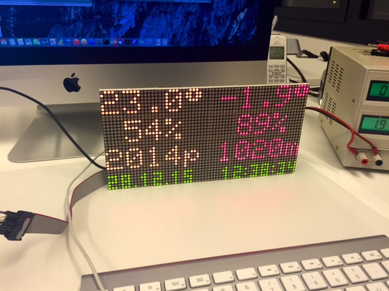

Netatmo LED Display

Project Goal
Drive a 64x32 RGA LED Display and display current environmental data from a Netatmo Weather-Station.
Technical Details
The heart of the system is an Arduino Yún.
The ATmega32u4 processor will drive the LCD-Display and the Atheros Linux SOC will talk to the Netatmo API using the Netatmo Python Client.
Using the 5x7 Font (included in the Adafruit GFX Library) the display is capable of displaying 10x4 Chars (using some spacing between the chars).
Project Status
Currently WIP and not fully functional (just displaying some static demo).
Arduino
This project uses the Adafruit_GXF libraries, which is available on Github:
cd ~/Documents/Arduino/libraries/ # your Arduino libraries dir
git clone https://github.com/adafruit/Adafruit-GFX-Library.git
Initially the Ultrathin LED Matrix Library was considered (see the
Github-link below). But because of the bad performance and missing
features (green led was not implemented), the whole hardware related
stuff was rewritten from scratch and integrated in the LEDDisplay
library, which is bundled with this project (separate library, can be
used also for other projects as well).
Using the current implementation, the matrix refresh cycles (full refresh running on 100Hz) do use only about 12% of the 16MHz CPU, leaving enough room for the main application.
PCB / Eagle
A custom Arduino-shield is provided for the connection between the Arduino and the LED Display. To minimize costs the shield is one-sided (TOP coper).